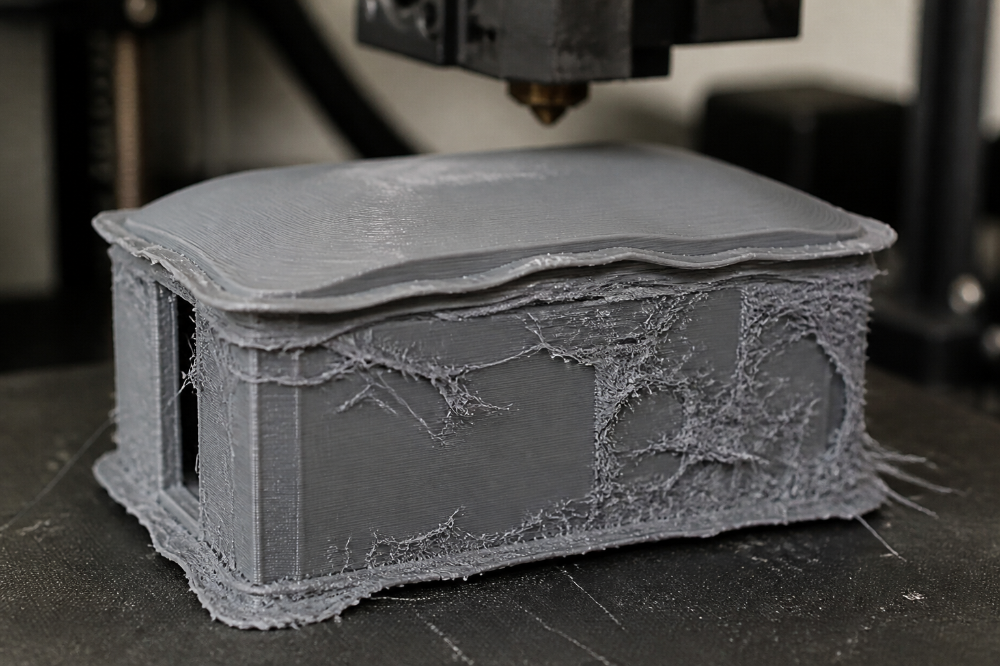

Ta mission : corriger le dessin du boîtier pour qu'une machine de l'atelier sache le produire, sans toucher au cahier des charges, puis préparer une fournée de douze boîtiers qui partira sans second essai.
🖥️ Ordinateur partagé (salle de techno, CDI) : un autre élève qui ouvre cette page sur la même session verra tes réponses.
Quand tu as fini : imprime en PDF si tu veux garder une trace, puis clique sur « 🗑 Effacer ma sauvegarde ».
| Code | Formulation officielle (programme 2024) | Où, dans cette séquence |
|---|---|---|
| 3e_C7.7 | Choisir les moyens et produire la forme voulue. | Activités 1 à 3 et REFAIRE — séances 1 à 4 |
| 3e_C8.1 (appui) | Mettre en œuvre une simulation pour valider la tenue mécanique d’un matériau. | Activité 3 (séance 3), REFAIRE et synthèse (séance 4) |
Référence normative : programme de technologie du cycle 4, BO n°9 du 29 février 2024. Codification opérationnelle : les codes 3e_C7.7 · 3e_C8.1 servent à ranger les séquences ; ils ne viennent pas du programme officiel.
Tout est décidé. 3e_C7.3 a choisi la matière et le procédé : PETG,
imprimé au collège — c'était la seule sortie qui laissait le boîtier réparable sur place.
3e_C7.6 l'a modélisé : 200 × 150 × 90 mm, sa casquette anti-pluie, sa rainure de
joint, son couvercle.
Ce qui change aujourd'hui : on lance la fabrication, et elle ne part pas. Le dessin est juste, la matière est bonne, la machine est là — et trois cotes sur cinq sont hors du domaine de la buse.
Et ce n'est pas le geste de C7.3. Là, aucun matériau ne passait, et il fallait rouvrir le cahier des charges en disant qui paierait le relâchement. Ici, le cahier des charges est intouchable : la station doit servir dix ans en tête de mât ; le boîtier en PETG tient cinq ans au soleil, et on a accepté de le réimprimer une fois, au milieu des dix ans ; il doit être étanche et peser moins de 1,2 kg. C'est le dessin qu'on corrige — et seulement lui.
Le fichier part à l'imprimante. Le logiciel de découpe en couches (il découpe la pièce en tranches fines, que l'imprimante dépose l'une sur l'autre) affiche trois avertissements, puis un quatrième message : impression lancée. Personne ne lit les avertissements, et la machine tourne cinquante-cinq minutes.
Le résultat. Le boîtier qui sort est inutilisable. La casquette anti-pluie est velue là où les supports (les petites colonnes que l'imprimante ajoute sous les parties en l'air) ont été arrachés. La rainure de joint (la petite gorge où se loge le joint qui empêche l'eau d'entrer) n'existe pas : à sa place, une ondulation. Et le couvercle ne ferme pas — il est soudé au fond sur trois centimètres.
Rien n'est cassé, rien n'a mal tourné. La machine a fait exactement ce qu'on lui a demandé, avec les moyens qu'elle a. Le dessin, lui, avait été fait sans elle.

Le dessin est juste et la pièce est ratée. Que faut-il corriger — et surtout, que faut-il surtout ne pas toucher ?
On la reprendra au bilan. Personne ne la corrige : elle sert à mesurer le chemin parcouru.
L'impression se fait en local ventilé, capot fermé. Une buse à 240 °C émet des particules ultrafines : on ne se penche pas au-dessus du plateau pour regarder la première couche, et l'extraction tourne pendant toute l'impression.
La buse et le plateau restent chauds longtemps après la fin. On décolle une pièce avec une spatule, plateau refroidi, jamais avec les doigts ni un couteau. Le retrait des supports se fait avec des lunettes : un support arraché part en éclats.
Le PVC ne s'imprime pas et ne se découpe pas au laser — chlorure d'hydrogène. Il est dans la liste de l'atelier ; il n'est dans aucun des deux procédés de ce lot.
Côté électricité, rien ne change : la station est alimentée en très basse tension, aucun élève ne manipule le secteur, et la pose en tête de mât reste un geste d'agent, pas d'élève.
Durée : 55 minutes · l'activité 0, puis la première partie de l'activité 1.
La question de la séance : que fera chaque machine du dessin, et laquelle sait produire le boîtier tel qu'il sort de la modélisation ?
Aucune machine ne rend le dessin. Chacune y met son accent, toujours le même, et cet accent porte un nom : c'est son empreinte. La connaître, c'est pouvoir dessiner pour elle plutôt que contre elle.
Associe chaque moyen à ce qu'il laisse toujours sur la pièce.
L'impression 3D — un bourrelet à la base, et des stries sur toutes les faces inclinées
La découpe laser — un trait de coupe de 0,2 mm : toute ouverture sort plus large
La fraiseuse numérique — un rayon de 1,5 mm imposé à chaque angle interne
Le thermoformage — une paroi qui s'amincit dans les angles, et d'autant plus qu'ils sont profonds
Une machine ne refuse presque jamais. Elle signale, puis elle exécute — parce qu'elle ne sait pas si le surplomb que tu as dessiné est une erreur ou une intention. C'est à celui qui lance de savoir. Cinquante-cinq minutes de machine et quarante grammes de filament se perdent en silence.
Une empreinte n'est pas un défaut. Les stries de l'impression, le trait de coupe du laser, le rayon de la fraiseuse : ce sont les traces de la façon dont chaque machine travaille. On ne les supprime pas — on dessine en les connaissant.
Voici l'atelier, chargé du dessin tel qu'il sort de la modélisation. Clique sur 🏭 Lancer l'atelier.
La jauge affiche 0. Regarde maintenant la colonne de gauche du tableau des cotes : chaque ligne porte ✔, ✘ ou un point. Trois lignes portent une croix — et deux n'en portent pas.
🏭 L'atelier des moyens de l'activité 1a — le même, avec ton dessin
L'atelier : cinq moyens, et un dessin qu'aucun ne sait produire. Chaque cote se modifie — le cahier des charges, lui, ne bouge pas.
Chaque cote se modifie. Le cahier des charges, lui, ne bouge pas : ni la matière, ni l'encombrement, ni ce que l'objet doit faire.
| Ce que le dessin demande | Cote dessinée | Pourquoi | |
|---|---|---|---|
| · | Paroi étanche de 2,9 mm | l'épaisseur calculée en 3e_C7.3 : e = 3,00 × racine(50 ÷ 53) pour le PETG | |
| · | Casquette anti-pluie inclinée à 70° | elle écarte l'eau du joint : c'est une fonction, pas une décoration | |
| · | Rainure de joint de 0,3 mm de profondeur | le joint torique doit se loger et rester en place | |
| · | Jeu de 0,1 mm entre le couvercle et le fond | le couvercle doit fermer juste, sans forcer et sans jouer | |
| · | Angles internes vifs au fond du boîtier | l'électronique se cale dans les coins |
La colonne de gauche se lit pour Impression 3D (dépôt de fil, buse 0,4 mm, couche 0,2 mm) — le moyen déjà retenu par le cahier des charges. ✘ : cette cote est hors de son domaine. ✔ : elle passe.
| Moyen | Temps machine | Ce qu'il fera de ton dessin | Verdict |
|---|
Associe chaque cote bloquante à ce que la machine lui reproche.
La suite de l'activité 1 — trois questions, puis la correction — ouvre la séance 2.
Durée : 55 minutes · la fin de l'activité 1, puis l'activité 2.
La question de la séance : quelles cotes corriger pour que la buse sache faire le boîtier, sans toucher au cahier des charges ni à ce qui passe déjà ?
⚠️ Avec l'imprimante : local ventilé, capot fermé, et on ne se penche pas au-dessus du plateau ; la buse et le plateau restent chauds longtemps — la pièce se décolle à la spatule, plateau refroidi — et les supports se retirent avec des lunettes. L'encadré complet est dans le rappel, en haut de page.
Pour reprendre : lancé sur le dessin tel qu'il sort de la modélisation, l'atelier ne trouve aucun moyen capable, et trois lignes du tableau des cotes portent une croix (activité 1a, séance 1). Reste à dire ce qu'on fait des deux autres. La vérification ci-dessous reprend aussi les trois associations de la première partie.
🔒 Lance d'abord l'atelier sur le dessin d'origine : le résultat de cette activité est justement ce que l'atelier affiche.
La casquette anti-pluie inclinée à 70° — au-delà de 45° la buse a besoin d'un support, et le support laisse une surface rugueuse
La rainure de joint de 0,3 mm de profondeur — une couche fait 0,2 mm : un détail de 0,3 mm, c'est une couche et demie
Le jeu de 0,1 mm entre le couvercle et le fond — l'impression tient 0,3 mm : à 0,1 mm dessiné, les deux pièces se soudent
1 et 2. Le plus difficile de cette séance est de ne pas
toucher à ce qui va. La paroi de 2,9 mm vient du calcul de 3e_C7.3 :
e = 3,00 × racine(50 ÷ 53) pour le PETG, l'épaisseur qui tient le vent en tête de
mât. L'impression demande au moins 1,6 mm pour une paroi étanche — quatre passes de buse —
et on en a sept. Elle passe, et elle passe pour une raison qui n'a rien à voir avec la
machine.
Les angles internes vifs, de même : l'impression les fait parfaitement. C'est la fraiseuse qui ne saurait pas — et on n'imprime pas à la fraiseuse. Corriger une cote qui va, c'est ajouter un risque sans résoudre un problème. L'atelier compte ces corrections-là sur une jauge séparée, et il a raison de les compter.
3. Les trois défauts se voyaient dans un tableau. Ils ont coûté 55 minutes de machine et une pièce. Ce n'est pas cher pour un prototype — ce le devient quand il n'y a qu'un seul tirage, et c'est justement la situation de l'activité 3.
On corrige le dessin « sans toucher au cahier des charges ». Pour savoir ce qu'on n'a pas le droit de toucher, trois minutes pour retrouver ce que dit chaque case d'une de ses lignes.
Ce que dit un cahier des charges, en trois mots : pour chaque fonction, un critère, un niveau et une flexibilité. Les mots de référence :
🐙 La leçon complète, avec un cahier des charges entier à compléter : l'atelier de 4e « Le diagramme des interacteurs extérieurs », exercice 6, « Le cahier des charges : critère, niveau, flexibilité », et son cours.
Complète cette ligne du cahier des charges du boîtier, directement dans le tableau : chaque case à menu attend une réponse.
✅ Tu as réussi si… les 5 cases justes, et tu sais dire pourquoi chaque piège ne va pas.
Remplis le tableau colonne par colonne. Pour chaque case, relis la définition du mot, juste au-dessus, dans « Les mots du cahier des charges ».
📌 À retenir : chaque fonction du cahier des charges (FP ou FC) a une désignation qui commence par un verbe à l'infinitif, un critère (ce qu'on mesure), un niveau (un nombre et son unité) et une flexibilité (l'écart que le client accepte, de F0 impératif à F3 très négociable).
⚠ Le piège classique : prendre le niveau (« au moins… ») pour le critère, écrire un niveau sans unité, ou choisir la flexibilité d'après l'importance de la fonction au lieu de l'écart que le client accepte.
Les trois cotes bloquantes se modifient directement dans le tableau. À chaque frappe, l'atelier recalcule. L'objectif est double : amener la jauge de gauche à 1 moyen capable, et laisser celle de droite à 0 cote modifiée sans nécessité.
Une correction n'est acceptable que si elle ne touche ni la matière, ni l'encombrement, ni ce que l'objet doit faire. Le cahier des charges n'est pas rouvert : il est tenu.
↑ Remonte à l'atelier — c'est le même, et il a gardé ton dessin. Une page ne porte qu'un seul atelier : deux exemplaires, ce seraient deux instruments qui répondent au même nom.
| La cote corrigée — et rien d'autre que la cote | Ta valeur |
|---|---|
| Inclinaison de la casquette anti-pluie | |
| Profondeur de la rainure de joint | |
| Jeu entre le couvercle et le fond |
🔒 Amène d'abord l'atelier à retenir UN moyen, en corrigeant les cotes qui bloquent : c'est l'expérience que cette activité demande de relever.
| La cote corrigée — et rien d'autre que la cote | Ta valeur |
|---|---|
| Inclinaison de la casquette anti-pluie | 45 ° |
| Profondeur de la rainure de joint | 0,6 mm |
| Jeu entre le couvercle et le fond | 0,4 mm |
Trois cotes, trois raisons, et aucune concession.
La casquette, 70° → 45°. Quarante-cinq degrés est exactement l'angle qu'une buse tient sans support : chaque couche s'appuie encore assez sur celle du dessous. Et une pente à 45° écarte parfaitement l'eau — c'est la pente qui compte, pas le nombre de degrés. La fonction est intacte.
La rainure, 0,3 → 0,6 mm. Une couche fait 0,2 mm. Un creux de 0,3 mm, c'est une couche et demie : la machine en fait une, ou deux, jamais une et demie. À 0,6 mm, c'est trois couches franches, et le joint torique se loge mieux qu'avant.
Le jeu, 0,1 → 0,4 mm. L'impression tient 0,3 mm de tolérance : deux surfaces dessinées à 0,1 mm l'une de l'autre se touchent, et le plastique chaud les soude. À 0,4 mm le couvercle ferme — et l'étanchéité, elle, est faite par le joint, pas par le jeu. C'est le travail du joint, et c'est pour cela qu'il y en a un.
2 et 3. Rien du cahier des charges n'a bougé : même PETG, mêmes 200 × 150 × 90 mm,
même étanchéité, même masse admise. En 3e_C7.3, relâcher la tenue au sel ou la
masse changeait ce que l'objet doit faire, et il fallait nommer qui paierait. Ici
on change comment on le dessine, et personne ne paie — c'est ce qui rend ce
geste-là préférable, et c'est pourquoi on le cherche en premier.
Et si tu as corrigé la paroi ou les angles vifs, la jauge de droite te l'a dit. Ce n'est pas une faute grave : c'est une correction inutile, donc un risque ajouté pour rien. Un dossier de fabrication se juge aussi à ce qu'il n'a pas touché.
Durée : 55 minutes · l'activité 3.
La question de la séance : sans second tirage, que faut-il savoir avant d'imprimer douze boîtiers, et que doit dire la note qui part avec le fichier ?
Le dessin est corrigé, l'atelier retient l'impression 3D. Reste à produire — et pas un boîtier : douze, un par bâtiment.
Passe la quantité à 12 sur l'atelier. L'impression demande 8 h 15 de machine, pour 3 h disponibles par semaine : près de trois semaines, et la saison cyclonique n'attend pas. Le principal propose de faire imprimer le lot au lycée voisin, qui a quatre machines. Même temps machine, mais dix jours de délai — et une seule fournée.
Une seule fournée veut dire : aucune itération. Pas de « on imprime, on mesure, on corrige, on réimprime ». Ce qu'on aurait appris en recommençant, il faut le savoir avant.
↑ Remonte à l'atelier — c'est le même, et il a gardé ton dessin. Une page ne porte qu'un seul atelier : deux exemplaires, ce seraient deux instruments qui répondent au même nom.
Associe chaque chose qu'on aurait apprise en recommençant à la façon de la savoir avant.
2. Rédige la note qui part avec le fichier au lycée voisin. Trois choses doivent y figurer : les trois cotes corrigées et pourquoi, les deux cotes qu'il ne faut surtout pas « améliorer », et ce qu'on demande de vérifier sur la première pièce sortie, avant de lancer les onze autres.
Le niveau attendu est le même : ces phrases donnent le départ, pas la réponse.
« Le couvercle ne ferme pas » — on l'aurait vu au premier tirage — sans tirage d'essai, il faut dessiner le jeu
« La casquette est velue » — on l'aurait poncée — sans second tirage, il faut l'angle qui évite le support
« La pièce a cassé au premier cyclone » — on ne l'aurait su qu'en vrai — c'est ce qu'une simulation sert à savoir avant
1. La simulation calcule une matière, pas une pièce imprimée. Elle suppose un matériau homogène : la même résistance dans toutes les directions. Or une pièce imprimée est un empilement de couches, et la liaison entre deux couches est plus faible que la matière d'une couche. La simulation dit où la pièce est chargée et si la contrainte dépasse la limite élastique — elle ne sait rien de l'orientation d'impression, qui décide pourtant de la direction où la pièce cédera.
C'est la limite honnête de 3e_C8.1 : une
simulation remplace beaucoup d'essais, jamais tous. Et elle ne remplace aucun des
essais qui portent sur la façon dont la pièce a été fabriquée.
2. Une note de lancement se juge à trois marques. Les cotes corrigées, avec leur raison — pour que personne au lycée ne « rétablisse » le dessin d'origine en croyant bien faire. Les cotes à ne pas toucher, avec leur raison aussi : la paroi de 2,9 mm vient d'un calcul de tenue au vent, pas d'un choix esthétique. Et un contrôle sur la première pièce : fermeture du couvercle, profondeur de rainure au pied à coulisse, surface de la casquette — trois mesures, dix minutes, avant d'engager plus de sept heures de machine.
Cette dernière ligne est la plus importante, et c'est celle qu'on oublie. « Une seule fournée » ne veut pas dire « on ne vérifie rien » : cela veut dire qu'on vérifie sur la première pièce, avant les autres. L'itération n'a pas disparu — elle a été réduite à un seul point de contrôle, et il faut savoir lequel.
Durée : 55 minutes · le REFAIRE, puis le bilan de la séquence et le renvoi au QCM.
La question de la séance : un atelier libre dès lundi sait-il produire ce boîtier — et que retenir de toute la séquence ?
Le lycée voisin répond : ses quatre machines sont prises pour trois semaines, mais il possède une fraiseuse numérique libre dès lundi, et des plaques de PMMA de 4 mm.
Écris : ce que ce moyen sait faire du boîtier, ce qu'il faudrait changer, et ce qui, cette fois, sortirait du cahier des charges.
Le niveau attendu est le même : ces phrases donnent le départ, pas la réponse.
La fraiseuse ne peut pas produire ce boîtier, et pour deux raisons de natures différentes.
La matière d'abord. Le PMMA n'est pas le PETG. 3e_C7.3 avait écarté
le PMMA sans même le mettre au tableau, et le PETG avait été retenu pour sa tenue au sel et
aux ultraviolets. Changer de matière, ce n'est pas corriger un dessin : c'est rouvrir le
cahier des charges, et il faudrait alors dire qui paie — ce qui est le geste de C7.3,
pas celui d'aujourd'hui.
La forme ensuite. Une fraiseuse 3 axes usine une pièce par le dessus : elle ne sait pas creuser un volume fermé. Le boîtier devrait être découpé en cinq faces assemblées, avec autant de joints à étancher qu'il y a d'arêtes — et l'étanchéité, elle, est au cahier des charges. Quant aux angles internes vifs, sa fraise les arrondirait à 1,5 mm : la carte électronique ne se calerait plus dans les coins.
La bonne réponse n'est donc pas technique, elle est de méthode : on ne cherche pas « un moyen libre », on cherche un moyen dont le domaine contient la pièce. Un atelier disponible qui ne sait pas faire la pièce n'est pas une solution de repli — c'est une perte de temps qui se découvre trois semaines plus tard.
Et la vraie réponse à faire au principal tient en une phrase : attendre les trois semaines, ou chercher un troisième atelier qui imprime le PETG. Le délai est négociable ; le domaine d'une machine ne l'est pas.
Sur l'atelier, remets le dessin d'origine, puis corrige une seule cote à la fois et relance. Combien de moyens capables obtiens-tu après une correction ? après deux ?
Tu verras qu'il n'y en a aucun tant que les trois ne sont pas faites. Écris en une phrase ce que cela dit d'un dessin de fabrication — et pourquoi « corriger le plus gros défaut » ne sert à rien tant que les autres restent.
Le niveau attendu est le même : ces phrases donnent le départ, pas la réponse.
Ce que montre l'atelier. Dessin d'origine : 0 moyen capable. Une seule cote corrigée — la casquette à 45°, ou la rainure à 0,6 mm, ou le jeu à 0,4 mm — : toujours 0. Deux cotes corrigées, quelles qu'elles soient : toujours 0. Les trois : 1 moyen capable, l'impression 3D. La jauge reste à 0 jusqu'à la dernière correction ; c'est la colonne de gauche du tableau des cotes qui dit, ligne par ligne, ce qui reste à faire.
La phrase attendue, par exemple : « Un dessin de fabrication passe en entier ou ne passe pas : une seule cote que la machine ne sait pas faire suffit à bloquer toute la pièce. » Corriger « le plus gros défaut » ne sert à rien tant que les autres restent, parce que la machine ne fait pas de moyenne : chaque cote est une condition, et il faut les tenir toutes en même temps.
Ce que cela change à la méthode : relever d'abord toutes les cotes bloquantes (celles qui portent ✘), les corriger toutes, puis relancer pour vérifier — sans toucher à celles qui passaient déjà.
Attendus : les nombres relevés (0 après une correction, 0 après deux, 1 après les trois) ; l'idée qu'une seule cote bloquante suffit à bloquer ; la raison pour laquelle le « plus gros défaut » n'a pas de sens ici.
Erreurs typiques : conclure que l'atelier « ne marche pas » parce que la jauge reste à 0 ; corriger aussi la paroi ou les angles vifs, qui passaient déjà (la jauge de droite le compte) ; croire qu'avec deux cotes sur trois, on est « presque » bon.
🔙 Ton idée de départ : —
Compare : ta réponse de départ proposait-elle de changer la machine, ou de changer le dessin ?
Le niveau attendu est le même : ces phrases donnent le départ, pas la réponse.
Comment j'ai travaillé :
Le niveau attendu est le même : ces phrases donnent le départ, pas la réponse.
Les quatre niveaux sont ceux du livret scolaire :
maîtrise insuffisante · maîtrise fragile · maîtrise satisfaisante · très bonne maîtrise.
Aucun n'est une note : choisis celui qui décrit ce que tu fais aujourd'hui.
30 questions sur l'empreinte des moyens, la correction d'un dessin et ce qu'une seule fournée impose. 20 portent sur le choix des moyens et la production de la forme, 10 sur la simulation de tenue mécanique et ses limites.
🚀 Ouvrir le QCM d'entraînement